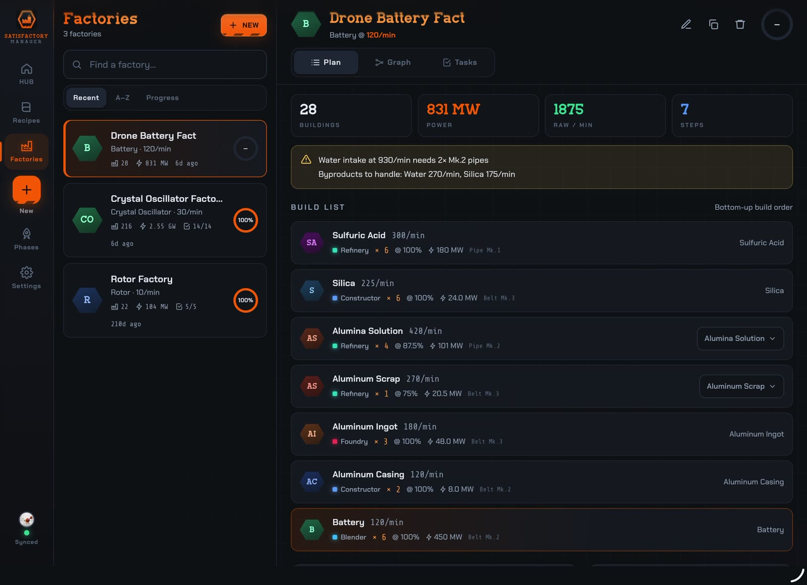
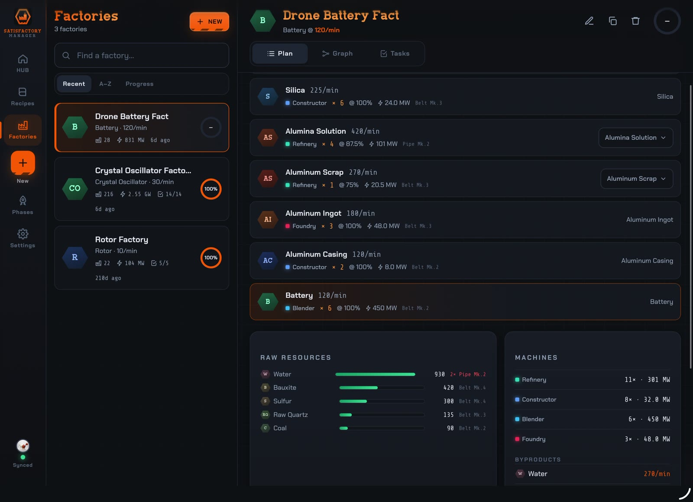
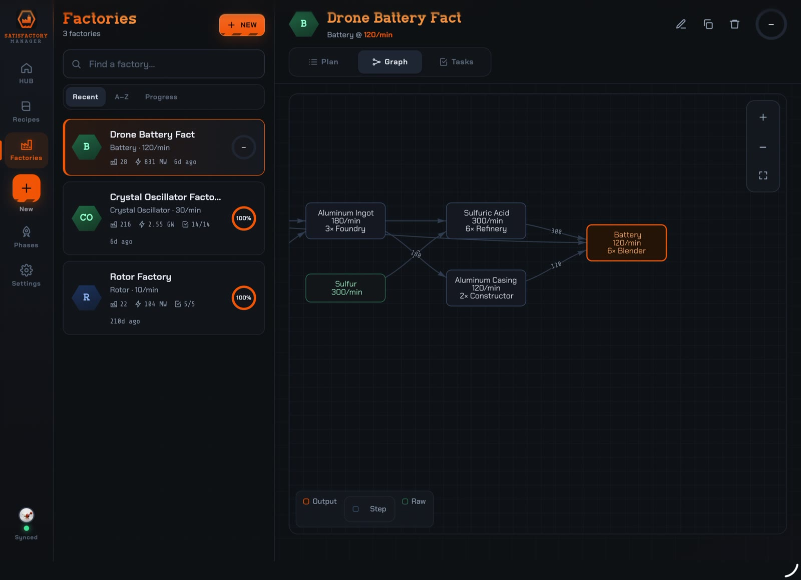
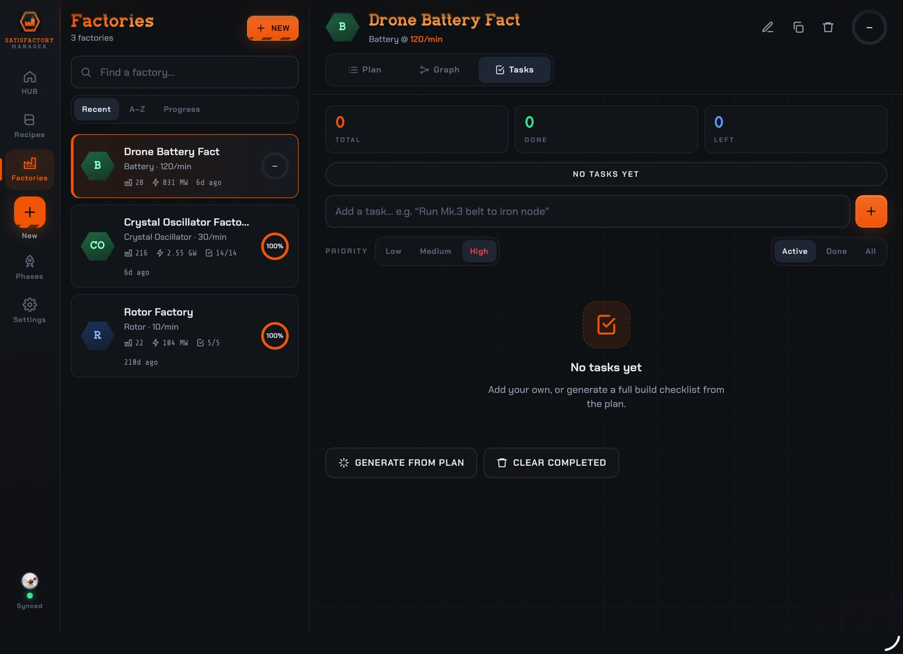
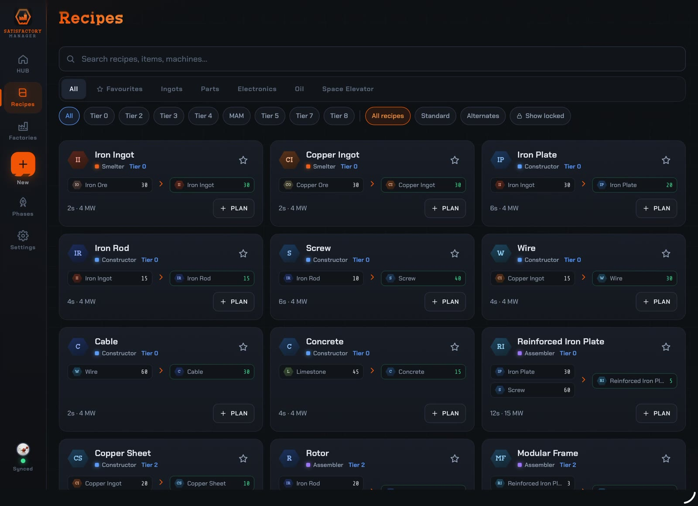
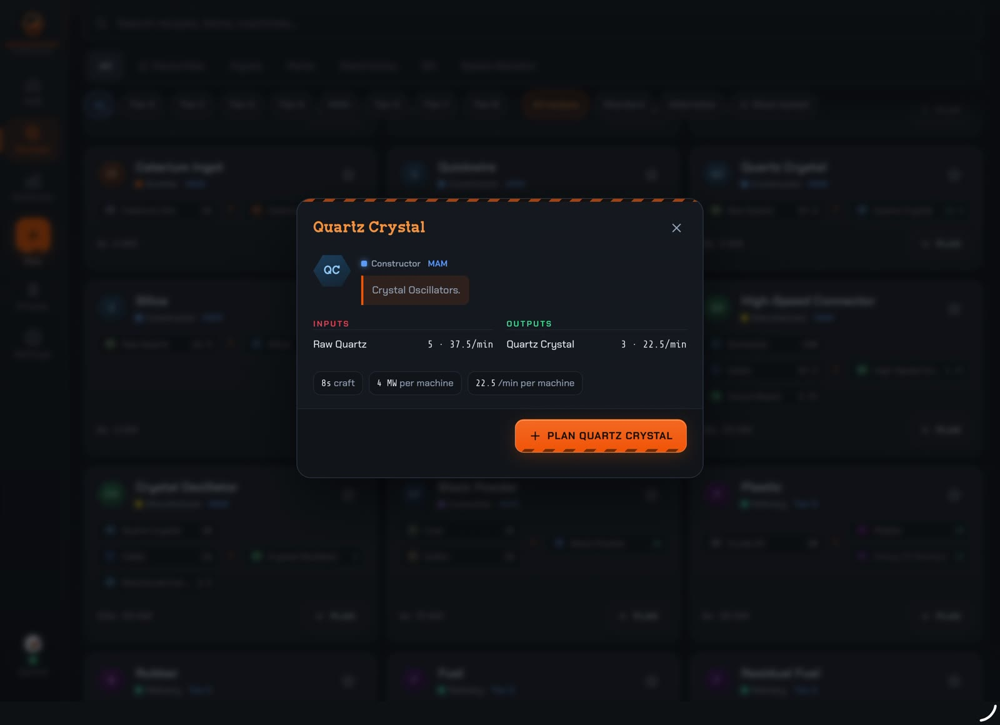
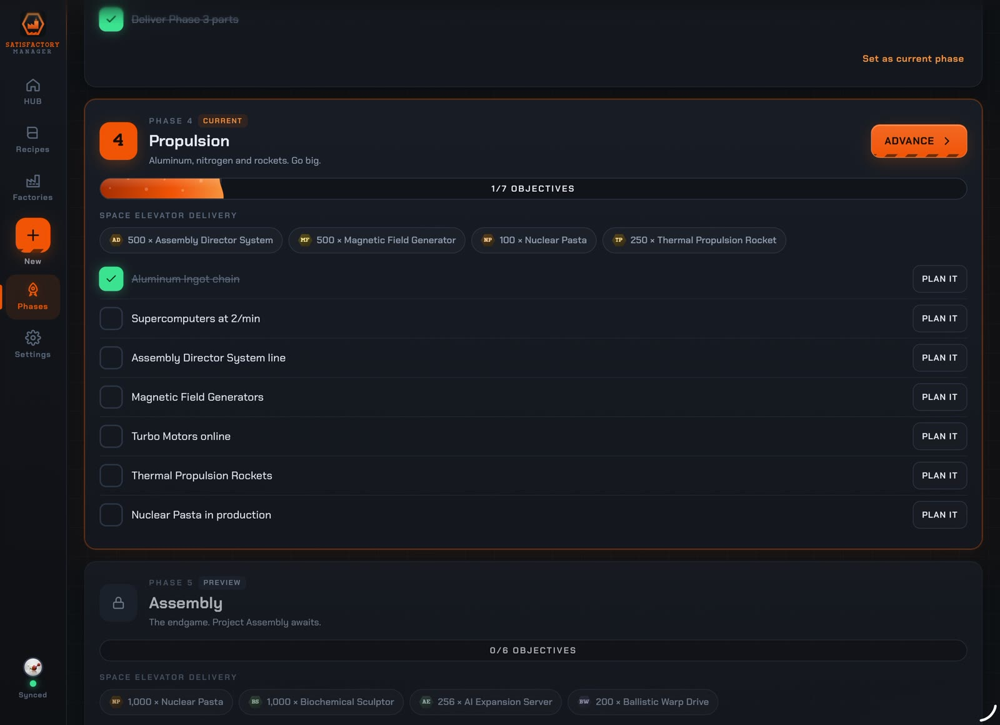

A factory-planning companion for the game Satisfactory: choose what to build and how fast, and it works out every machine, belt and ore node — then helps you track the build.
Satisfactory Manager started in April 2026. The November rebuild turned it into a proper product: an iPad-first redesign, a planner rewritten for Satisfactory 1.0, Google sign-in with per-user cloud sync, and an installable offline app deployed on Firebase Hosting with automatic CI/CD. It is plain HTML, CSS and JavaScript — ES modules, no framework and no build step.
What changed in the rebuild
Before: a shared, unauthenticated database on GitHub Pages, pre-1.0 recipes, and a planner that mishandled byproducts.
After: about 100 Satisfactory 1.0 recipes, a rewritten planner with power and belt-tier maths, Google sign-in with private per-user data, offline-first sync, and a nav-rail layout for iPad landscape with a bottom tab bar in portrait.
Features
HUB — current Space Elevator phase with live progress, next objectives, recent factories, and empire-wide totals for buildings, power draw, open tasks and raw resource demand.
Recipe explorer — recipes with search, category, tier and standard/alternate filters, per-minute rates, favourites, and Plan straight from any recipe.
Factory planner — a bottom-up build list with machine count, clock %, power (using the in-game clock curve) and belt/pipe tier; alternate recipes per item; byproducts and belt-capacity warnings; a production tree and an interactive graph.
Build tasks — priorities, filters and progress, with one-tap generation of a checklist from a plan.
Project Assembly — all five Space Elevator phases, each objective with a one-tap factory suggestion.
Sync and offline — Google sign-in syncs factories, favourites and phase across iPad, phone and PC; the app also works offline as an installable PWA, with a local-only mode and JSON export/import.
How the planner works
The planner recursively follows every recipe needed to make your target item, down to raw resources. For each step it computes cycles per minute (60 ÷ craft time) and the machine count (target rate ÷ output per machine per minute), then repeats for every ingredient. Machines are split across whole buildings at an equal clock speed, and power uses the game’s clock curve (power ∝ clock1.3219). The result feeds the build list, the graph and the generated tasks — all pure functions, so any change recalculates instantly.
See it in action
Recorded on my iPad against the live app, with my own factories and my own progress through the game.
Plan and graph — a 120/min battery factory: the bottom-up build list with belt and pipe warnings, the production tree, then the interactive graph.Recipe explorer — browsing recipes by tier and category, and opening a recipe to see its inputs, outputs and per-minute rates.Project Assembly — the five Space Elevator phases: three complete, Phase 4 (Propulsion) in progress.
Screens

Factory plan — 28 buildings, 831 MW and a bottom-up build list, with a warning that water intake needs 2× Mk.2 pipes and a note on byproducts to handle.

Resources, machines and byproducts — raw intake per minute with the belt tier it needs, machine totals with power, and the byproducts to handle.

Graph — an interactive, zoomable production graph with the flow on every edge.

Build tasks — priorities, filters and progress, with “Generate from plan” creating a checklist of every machine to place, node to tap and byproduct to handle.

Recipe explorer — search and filter Satisfactory 1.0 recipes, with per-minute rates and a one-tap Plan button.

Recipe detail — inputs, outputs and per-minute rates for a recipe, with one tap to plan a factory for it.

Project Assembly — Phase 4 in progress, with each objective one tap from a factory plan. Your phase decides which recipe tiers count as unlocked.
The layout adapts to the device: a navigation rail with a split view in landscape, and a bottom tab bar in portrait or on phones.
Difficulties and how I solved them
1. The app silently stopped saving
Problem. The first version wrote to a shared Firebase Realtime Database with no login. Test-mode rules like that expire after about 30 days — so one day the app showed “Offline” and could no longer save, with no explanation.
Solution. I rebuilt persistence around identity. Google sign-in gives every user private data under /users/{uid}, and new security rules enforce both ownership and the shape of the data (valid phase, bounded names, positive rates). Every write now surfaces failures as toasts, and a visible sync status distinguishes online, offline, denied and local. The store is offline-first — optimistic updates cached in local storage — and a one-time import brought the old shared factories across, remapping legacy recipe IDs.
2. Google sign-in on the iPad home screen
Problem. Safari partitions storage for home-screen apps, so signing in through a cross-origin auth domain (the Firebase handler on a different host from the app) could fail on the very device the app was designed for. Popups also open outside a home-screen app and can’t report back.
Solution. I moved hosting to Firebase Hosting, where the auth handler lives at /__/auth on the app’s own origin, making sign-in same-origin. In home-screen mode the app uses a redirect flow instead of a popup and reports redirect errors as toasts, and the service worker never intercepts Firebase’s reserved /__/ paths.
3. “Error 400: redirect_uri_mismatch”
Problem. After the move, sign-in failed outright. Using the web.app host as the auth domain sent Google a redirect URI that the auto-created OAuth client doesn’t allow.
Solution. I traced it to the OAuth client’s allowed redirect list and made the firebaseapp.com host canonical: it is always the auth domain (its handler is already in the client’s default list, so no Google Cloud Console changes), and the app is served from that same host so sign-in stays same-origin. Browser tabs on web.app are forwarded there, preserving path and hash, while home-screen installs see a hint instead of a redirect.
4. A planner that treated byproducts as producers
Problem. Early plans were subtly wrong: because recipes were matched by any output, the planner could resolve an item through a recipe that only produces it as a byproduct — for example, Water from Aluminum Scrap.
Solution. I changed the data model so every recipe has one explicit product and a separate list of byproducts. The planner only chooses recipes whose product is the item it needs, and byproducts are totalled and surfaced as warnings (“Byproducts to handle…”) instead of being silently used as inputs.
What building it taught me
Cloud
Firebase end to end: Authentication with Google sign-in, per-user Realtime Database with validated security rules, and Hosting with tuned cache headers.
Debugging OAuth in Google Cloud: how auth domains, redirect URIs and same-origin policy interact, especially on iOS home-screen apps.
CI/CD with GitHub Actions: every push to main deploys live and every pull request gets a 7-day preview channel, using a dedicated Firebase Hosting service account — and the workflow skips cleanly, rather than failing, until the secret exists.
AI-assisted engineering
Built the rebuild as three reviewed pull requests with an AI coding agent, writing each commit message around why the change was needed so the history explains the failures behind it.
Kept the human in charge of the product: I set the scope, reviewed each pull request, and diagnosed the real-world failures (expired rules, sign-in errors) that drove the next change.
System design
Offline-first architecture: a single store with optimistic updates, a local cache, an explicit sync-state machine, and a lazily loaded Firebase SDK so the app still boots when the network doesn’t.
A pure, framework-free planner that separates the calculation from the UI, so the same results drive the build list, graph and generated tasks.
A deliberately dependency-light stack — no framework and no build step — that keeps the app fast, easy to deploy and easy to reason about.